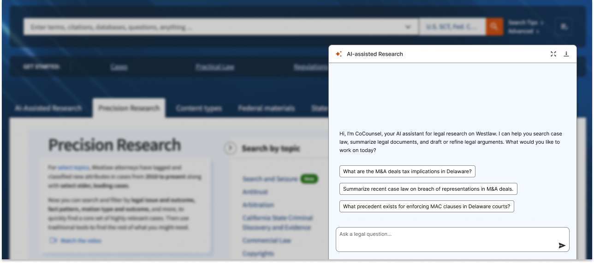
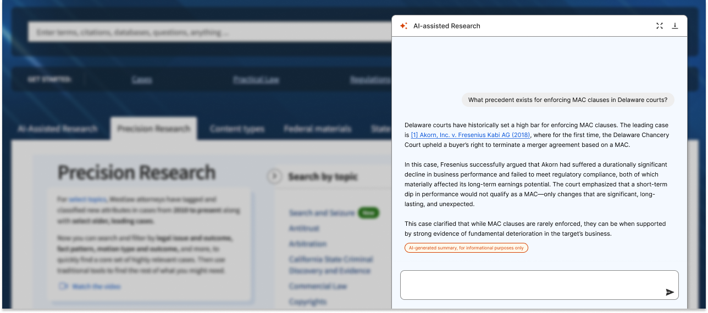
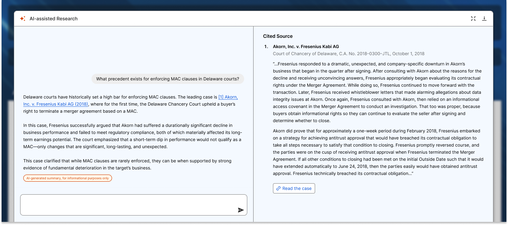
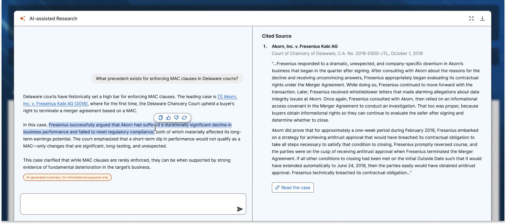

Westlaw’s AI-assisted legal research design
by Chuan Tan · 4 min read
Overview
Westlaw is a legal research platform used by legal professionals to access case law, statutes, and legal commentary. Recently, it faced disruption from AI tools that can rapidly generate legal summaries, conduct case analysis, and automate complex research tasks.
The Challenge
Lawyers often face significant challenges when researching case law due to the sheer volume and complexity of legal information. Navigating outdated interfaces, inconsistent search results, and dense legal language can make it difficult to quickly identify relevant precedents. Time constraints, pressure for accuracy, and the need to interpret subtle legal nuances further complicate the process—especially when stakes are high and cases hinge on finding the right supporting authority.
The Outcome
Westlaw’s first AI-powered legal tool generated $55 million in sales one year after launch.
Westlaw's AI-assisted research
AI Imrpoves Efficiency in Legal Research
In Westlaw, AI has streamlined the legal research process by delivering smart, context-aware recommendations and automating repetitive tasks—saving lawyers valuable time. It has responded intuitively to user input while proactively surfacing relevant cases and precedents, keeping workflows focused, efficient, and free from unnecessary friction.
AI summary with cited source link
Transparency & Trust
AI-generated content has been clearly marked, allowing legal professionals to easily distinguish it from their own input or sourced materials. The system has maintained transparency by providing clear explanations and citations for its suggestions or actions—helping users understand the legal basis behind each recommendation and building trust in the research process.
Cited source pannel with button to view case document
User Control
AI has been designed to support—not replace—legal professionals in their decision-making. Lawyers retained full control, with the ability to review, edit, or reject AI-generated suggestions before incorporating them into their work. 
Highlight response to copy, approve, reject or restart
Conclusion
The integration of AI into Westlaw marks a pivotal shift in how legal professionals conduct research—bringing greater efficiency, transparency, and user empowerment to an otherwise complex and time-intensive process. By delivering relevant insights faster, explaining its reasoning clearly, and keeping lawyers firmly in control, Westlaw’s AI-assisted tools have not only enhanced the user experience but also demonstrated real business value. This transformation is a testament to how thoughtful, human-centered design can successfully merge emerging technology with the rigorous demands of legal work—setting a new standard for the future of legal research.
View more projects